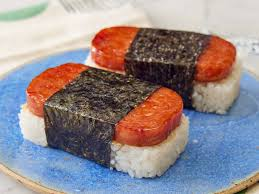

Simple Musubi Recipe

Celebrate Musubi Day or just make a quick snack! This musubi recipe is just the treat for you to get a quick bite at home with minimal effort!
Difference Between Musubi and Onigiri
Isn't that just Onigiri with an extra step? Yes! Musubi, expecially my personal favorite, Hawaiian Spam Musubi, is a variation of Onigiri that takes on the shape of a block versus the Onigiri, also O-musubi, rice ball wrap. If you have the ingredients for musubi, you can make onigiri, too! But today we're going to focus on Musubi, so here's what you need!
Ingredients
- 1 cup Sticky Rice
- 1 1/4 cup Water
- 1 tbsp oil
- 1 can of spam
- Seaweed sushi wrap sheets
- (optional)Salt and Pepper, to taste
- (optional)Soy sauce, for dipping
Steps:
- We can begin by making the rice. I like to use the rice cooker. All you do is take the rice, rinse until it is clear and not cloudy water, and place the rice into the cooker with the 1 1/4 cup of water.
- While the rice is cooking, pour the oil onto a fry pan and heat it up to medium. Unpackage the can of spam and cut it into four blocks. When the pan is steaming a little, place spam blocks onto the pan and fry them to a nice crisp brown. Remember to flip and fry both sides.
- After you've finished frying the spam, cut the seaweed into four strips.
- Taking the rice from the cooker, you can use the can from the spam as a mold for the block. Make the four blocks of rice.
- Combined the rice and spam by stacking them one on top of the other. The order does not matter.
- Roll the combined shape into the seaweed, sushi style and done! You've got spam musubi!
You can season it with salt and pepper. Sometimes I go without because I'm lazy or pretending to be healthy. We can fill a dipping cup with soy sauce or add it right on top. Huzzah.